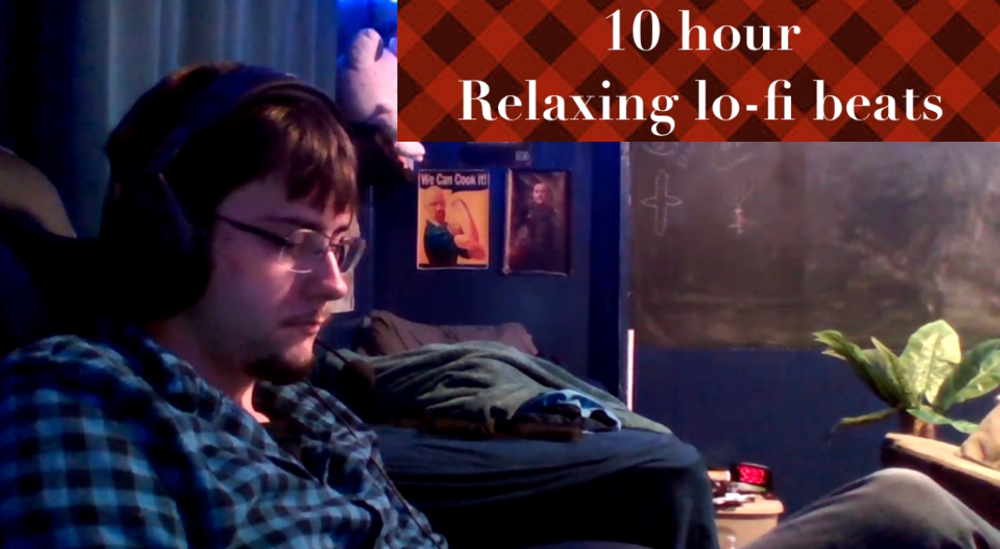

The Meaning of Life
As rugged as a mountain trail, I am the attire of labor and leisure alike. Spun from sturdy denim, I have evolved from workwear
to fashion icon. My name might bring to mind the gold rush, cowboys, and a popular song about a certain look.
The essence of survival in the wild, I am a blend of functionality and protection. My soft exterior masks a critical role in
thermoregulation and defense. As seasons change, I adapt, ensuring the creatures that bear me are shielded from the elements.
In the heart of winter, I am your steadfast companion. Laced tight against the cold, I stand between you and the chill. My presence
is a testament to preparation, a fortress for your feet. From the city streets to the mountain trails, I am essential.
Found in both mythology and the everyday, I am a symbol of health and mischief alike. I am known to tempt and to heal, embodying
both sweetness and the weight of tradition. From orchard to basket, my journey is one of cultivation and delight, but beware of
taking me unwashed.
In the symphony of language, I am the conductor of coherence, the guide through complexity. Though I may be a single syllable,
my impact is vast, ensuring the flow of thought is seamless. Without me, communication would be a fragmented affair.
I am the terminus of all paths leading downward, a place where gravity reigns supreme. Often spoken of in mining and geology,
I am where the search begins anew. My domain is hidden from the light, a repository of the earth’s deepest secrets and resources.
Subtle yet indispensable, I bridge ideas and concepts in the realm of language. My role is often overlooked, but without me,
clarity would falter. I am the silent orchestrator of fluent expression, small in stature but immense in function.
The Spoken Word
I carry the weight of authority, seen on documents and heard in decisions. My presence means things
are recognized and validated by the right powers. You need me for passports, legal papers, and
anything that requires a seal of approval.
Often seen as underwhelming, I am the embodiment of missed potential. Despite grand aspirations, my
efforts frequently fall short. My story is filled with what-ifs and almosts, serving as a reminder
that aiming high doesn't always guarantee success. I'm also a femboy.
United by shared admiration, we come together to celebrate our common interest. Whether it’s for an
artist, sports team, or fictional character, our gatherings are marked by enthusiasm and devotion.
We wear our symbols proudly, showcasing our collective spirit.
I encompass all the ordinary and extraordinary elements that surround us. From the mundane to the
remarkable, I make up the fragments of daily life. Often overlooked, I hold significance in every
action and object, making life rich with detail.
An assortment of bits and bobs, I am a collection of the seemingly insignificant. Together, I form
the backdrop of everyday life, filling the spaces between the grander schemes. In my presence, the
typical and the unique coexist.
I serve to connect words, phrases, and thoughts, ensuring fluidity in communication. Though small
and often unnoticed, I play a crucial role in maintaining coherence. Without me, sentences would
be fragmented, and ideas disjointed.
I reside on the fringes of polite conversation, known for my raw and often taboo nature. Spoken in
moments of frustration or emphasis, I am both common and shunned in formal settings. Despite this,
I represent an undeniable honesty in human expression.
The Undeniable Truth
This name has resonated through time, carried by saints, leaders, and everyday folks alike.
It means "graced by Yahweh" and signifies a divine blessing. It’s a name that appears in
literature, history, and even your local coffee shop. Throughout generations, it has
maintained its popularity and familiarity, making it a timeless choice.
Essential in affirming existence, this word is the backbone of reality. It’s used in every
language to express being, presence, and occurrence. From the simplest sentences stating
facts to complex philosophical discussions about existence, this word stands central. It
is the linchpin that holds our expressions of reality together.
This small yet mighty word specifies and directs attention. It indicates something specific,
often previously mentioned or easily identified by the listener. Found in everyday speech,
it helps clarify and bring precision to communication. Its utility spans both written and
spoken language, making it an indispensable part of our daily interactions.
Known for his ability to bring laughter to any room, this person’s humor is unmatched. He
has a knack for seeing the funny side of life and turning even the most mundane moments
into sources of joy. His quick wit and clever jokes make him the go-to person for a good
laugh. Whether in social gatherings or casual conversations, he never fails to amuse.
With a sharp intellect and a wealth of knowledge, this person is often turned to for advice
and solutions. Their wisdom is a beacon in times of confusion, and their ability to analyze
and solve problems is unparalleled. Known for their clever insights and innovative thinking,
they make complex issues seem simple. They are the epitome of intelligence and resourcefulness.
A word that might be small, but its role is crucial in language. It serves as a connector,
linking words, phrases, and clauses together. This word ensures our thoughts flow smoothly
and our sentences make sense. Without it, our communication would be disjointed and fragmented.
It’s a small yet powerful part of language that often goes unnoticed but is essential for coherence.
Admired for their effortless charm and grace, this person is the center of attention in
any social setting. They exude confidence and likability, making them a magnet for admiration.
Whether in a professional environment or a casual gathering, their presence is always felt.
They have the ability to make everyone around them feel comfortable and appreciated.
Representing the male counterpart, this word is commonly used to refer to men and boys. It
signifies gender and is a fundamental part of identity. This word is used in everyday
conversations and is key to differentiating between male and female individuals. It’s simple
yet crucial in our daily interactions.
This word is central to personal expression, representing the speaker themselves. It’s the
first person singular pronoun and is used to convey one’s own thoughts, feelings, and
experiences. It places the speaker at the heart of the narrative, making their perspective
clear. Without it, personal expression would be impersonal and detached.
A word that conveys recognition and familiarity, signifying that someone or something is
known. It’s used to express understanding and awareness, making it a key part of
communication. This term is essential in both formal and informal contexts, as it bridges
the gap between familiarity and knowledge.
You've done it! You've finished the challenge, and reached the end! To claim your prize, DM me the answers you provided to the riddles on this page, as well as a screen shot of this current page!
Haha! You sneaky bitch! You found the ACTUAL real reward. Good shit. You're like, super smart or something. Probably a doctor, maybe a lawyer? Who knows. Good stuff tho. If you want your reward (and I promise this is the actual final one), DM me your answers to the riddles on this page, as well as a screenshot of your current screen.